Chuang Zhao (赵闯)
PhD Candidate of Electronic and Computer Engineering
Hong Kong University of Science and Technology (HKUST) (Since 12/2024)
Research Interests: AI for Science, Agentic Modeling, Information Retrieval
Advisors: Prof. Xiaomeng Li (Primary),
Prof. Xiaofang Zhou (Co-supervised)
Master Advisor: Prof. Hongke Zhao
Collaborators: Prof. Yong Ge (Arizona),
Prof. Hui Xiong (HKUST-GZ)
News
- 05/2025
- One paper accepted by KDD! Congratulations.
- 12/2024
- Passed the PQE! Thrilling achievement.
- 07/2024
- One paper accepted by TKDE! Congratulations.
- 05/2024
- One paper accepted by TSMC! Congratulations.
- 10/2023
- One paper accepted by TKDE! Congratulations.
- 01/2023
- One paper accepted by WWW2023! Congratulations.
- 11/2022
- Decided to join HKUST to pursue PhD under Prof. Xiaomeng Li.
Current Research Keywords
My research focuses on developing novel machine learning algorithms for real-world applications, with a particular emphasis on:
Publications
Several papers are currently under review / published and are not listed here. Please refer to my Google Scholar for the latest publications.
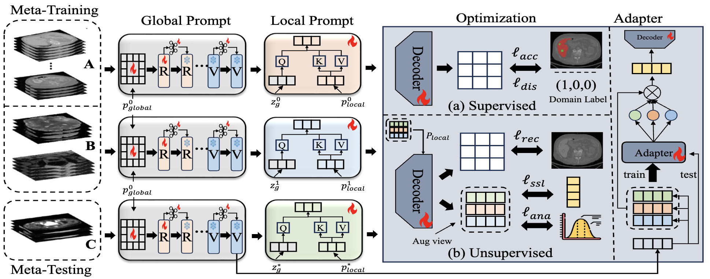
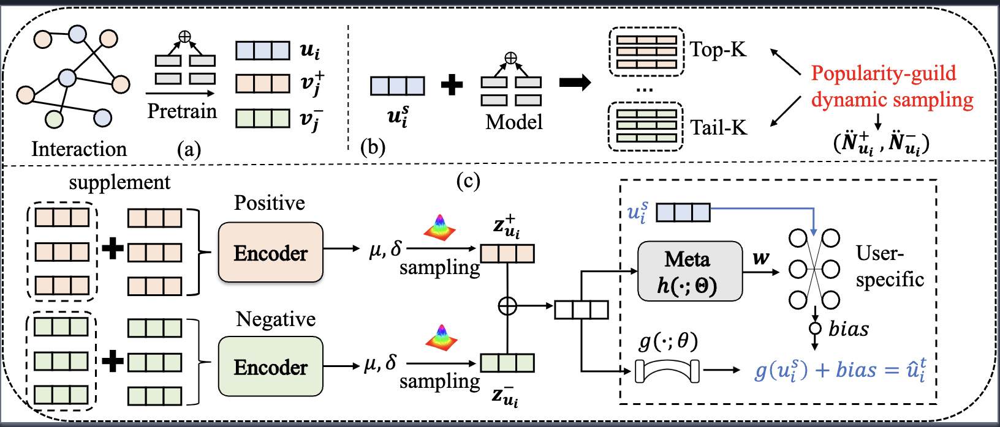
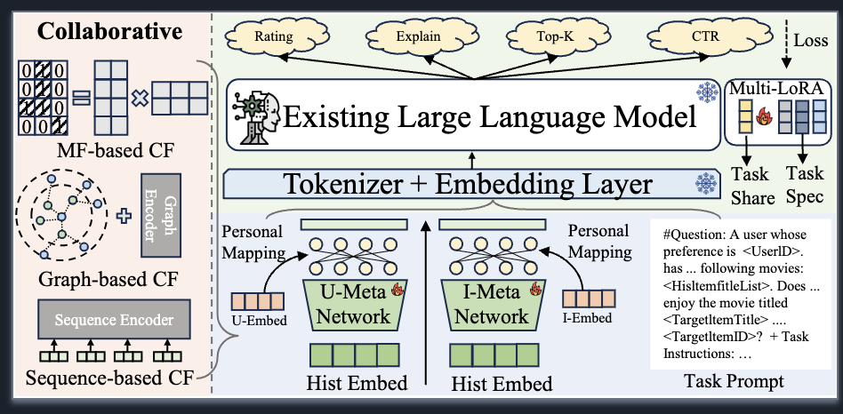
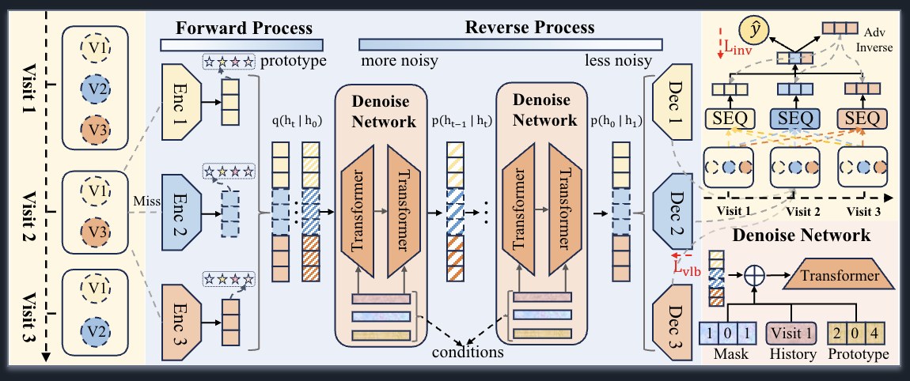
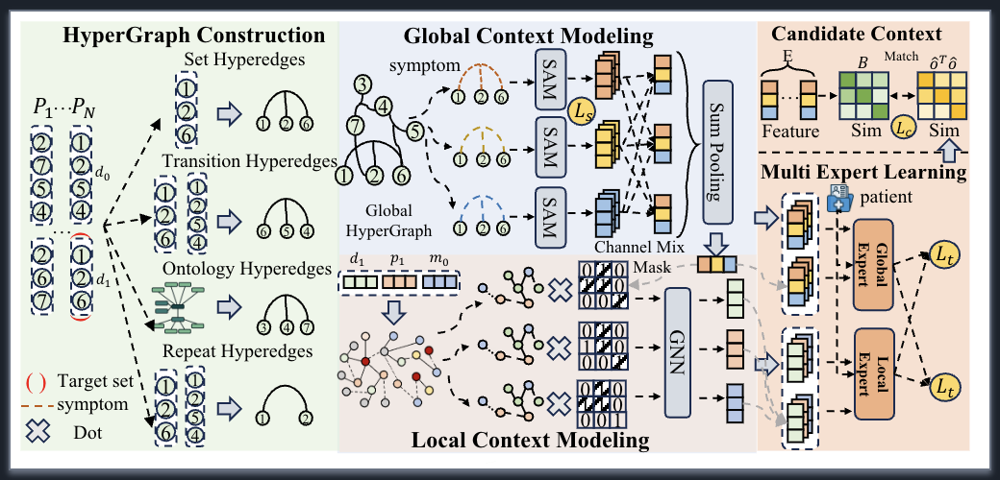
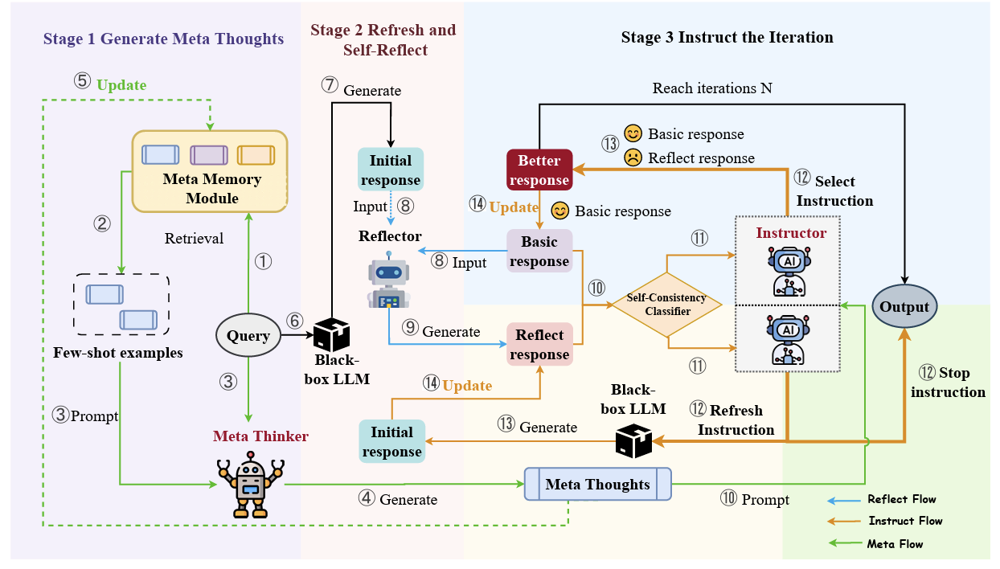
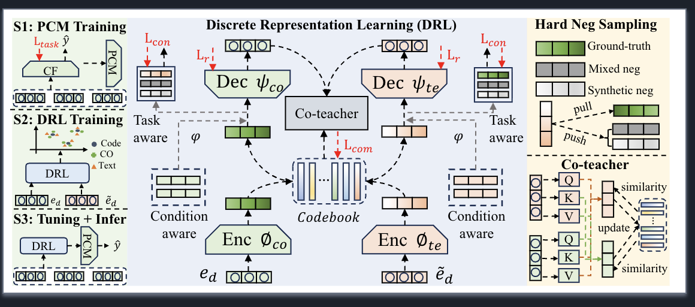
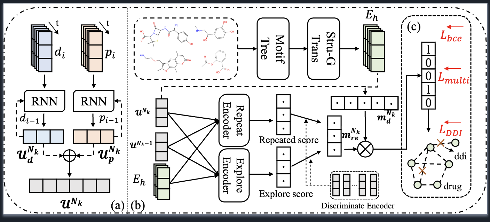
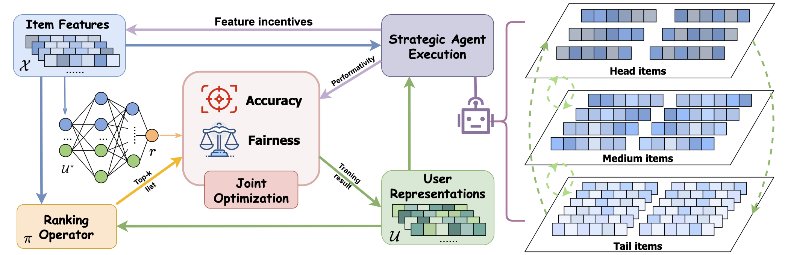
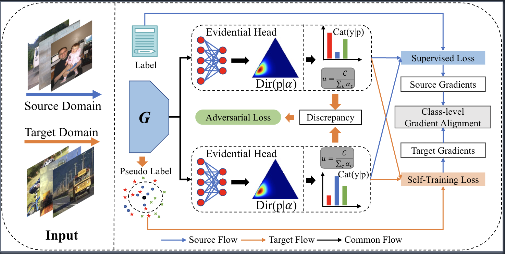
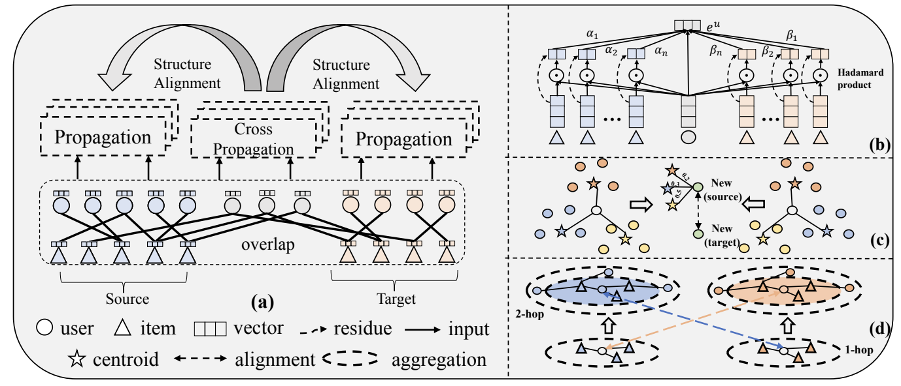
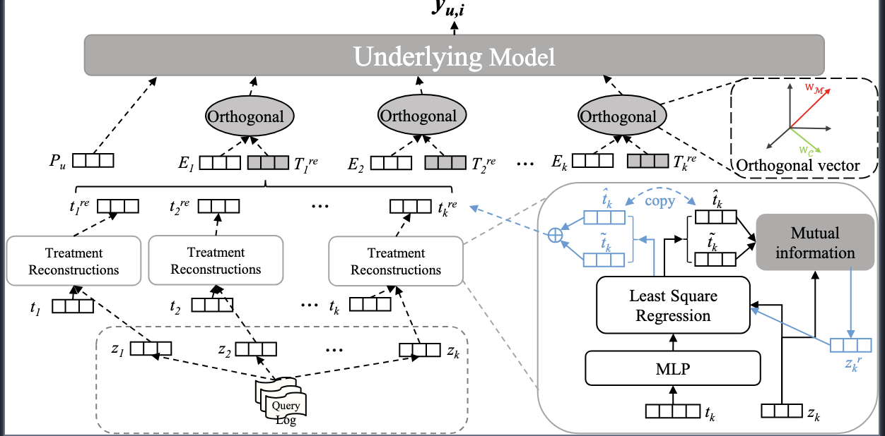
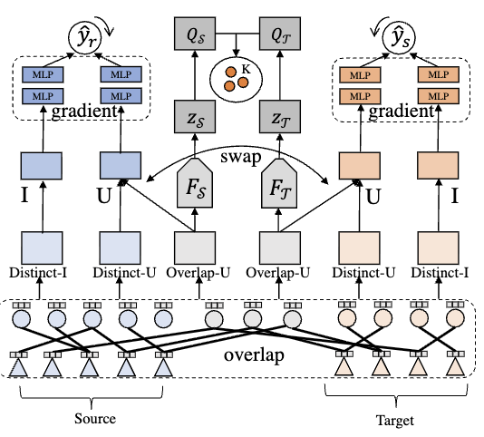
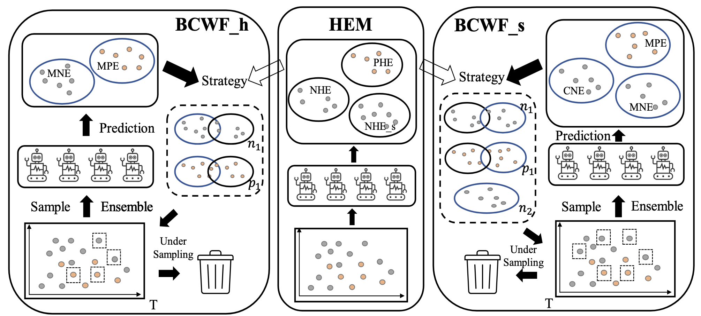
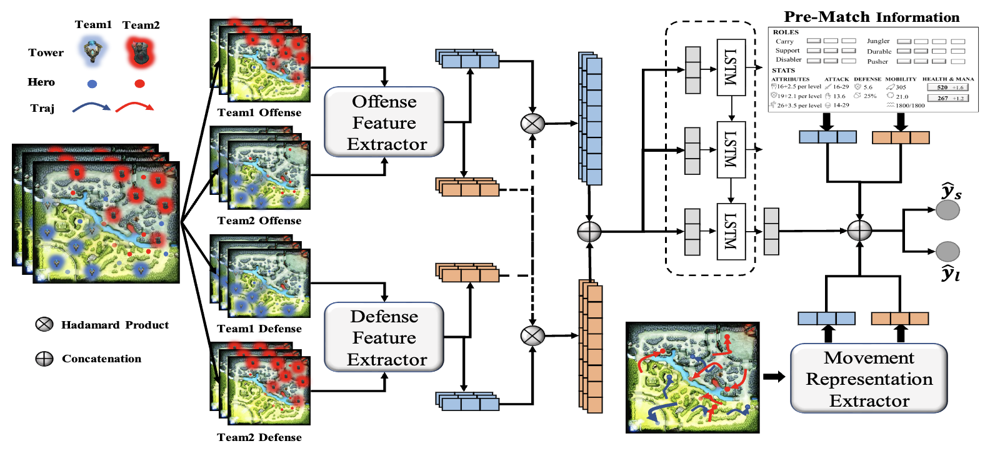
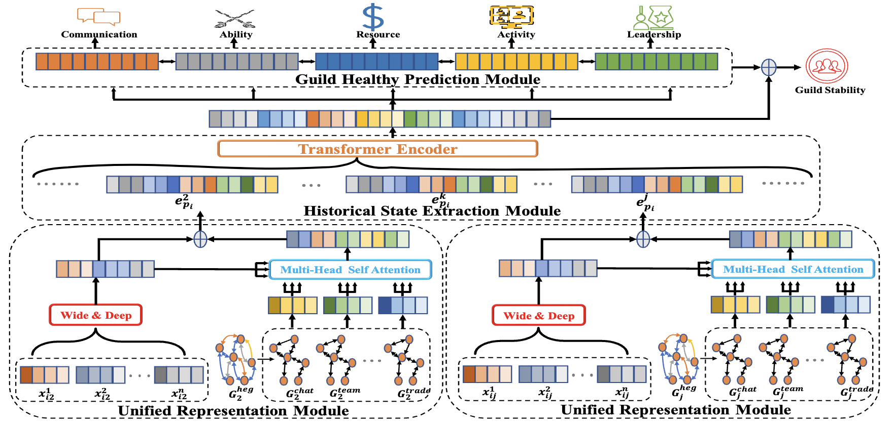
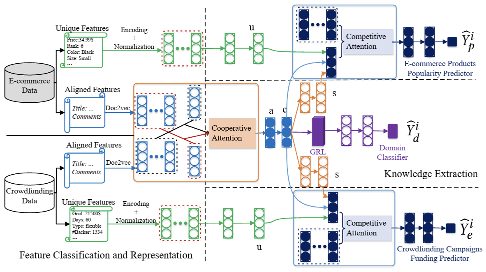
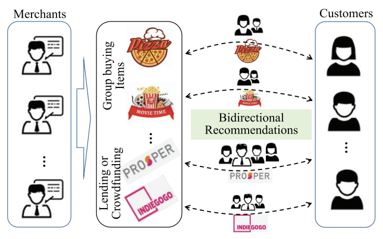
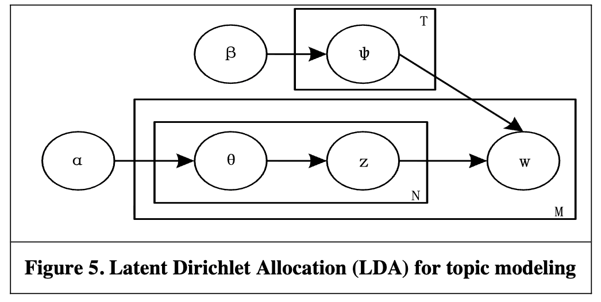
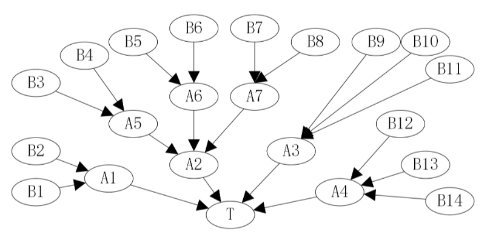
Research Knowledge Graph
Interactive visualization of my research publications, journals, and key research topics (drag to move, scroll to zoom).
Internship
Academic Services
- Conference Reviewer
-
WSDM 2022
SIGKDD 2024
SIGKDD 2025, ICLR 2025, WWW 2025, SIGIR 2025, NIPS 2025, ACL 2025
SIGKDD 2026, WSDM 2026, AAAI 2026, WWW 2026, ICML 2026 - Journal Reviewer
-
INFORMS Journal on Computing
PeerJ Computer Science
Information Science
Neural Networks
Information Processing and Management
IEEE Transactions on Knowledge and Data Engineering
IEEE Transactions on Systems, Man, and Cybernetics: Systems
IEEE Transactions on Learning Technologies
Journal of Computer Science and Technology
Expert Systems With Applications
Knowledge-based Systems
Electronic Commerce Research and Applications
Multimedia Systems
IEEE Transactions on Big Data
Scientific Reports
ACM Transactions on Information Systems
Recent Honors and Awards
- 2025: Outstanding Reviewer for KDD
- 2024: Excellent Reviewer for KDD
- 2023: Outstanding thesis award of TJU
- 2022 & 2021: First-class Scholarship of TJU (Top 1%)
- 2021: National Graduate Student Mathematical Modeling (Third Prize)
- 2021: Merit Student of TJU
- 2020: National Encouragement Scholarship (Top 1%)
- 2020: Outstanding Student Leaders
- 2019: Liaoning Province Contemporary Undergraduate Mathematical Contest in Modeling (First Prize)
- 2019: Liaoning Province Internet plus entrepreneurship competition (First Prize)
- 2019: National Social Practice Activities (First Prize)